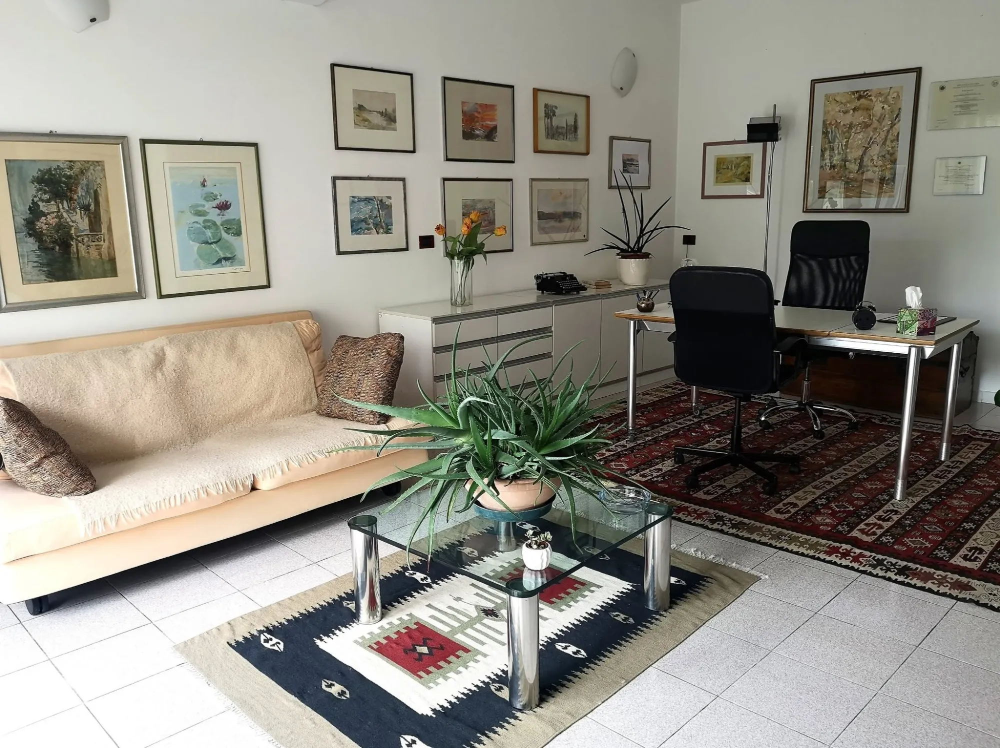
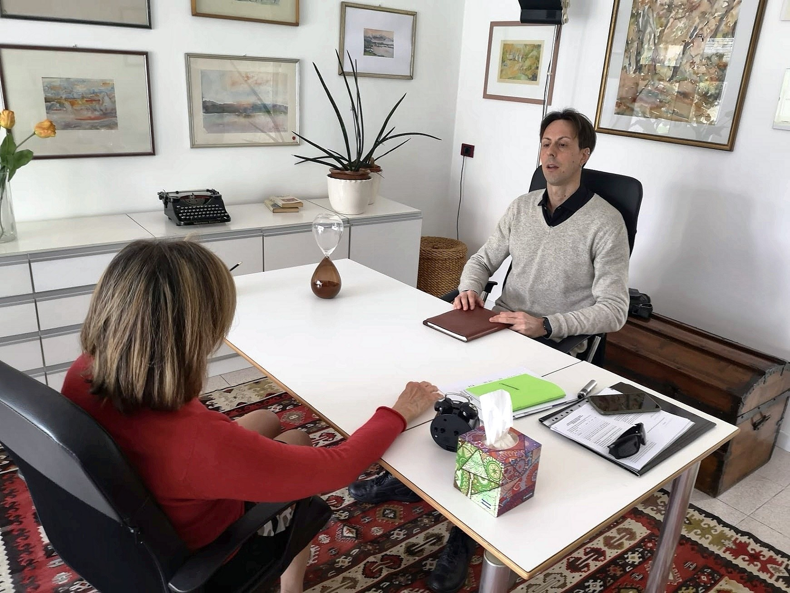
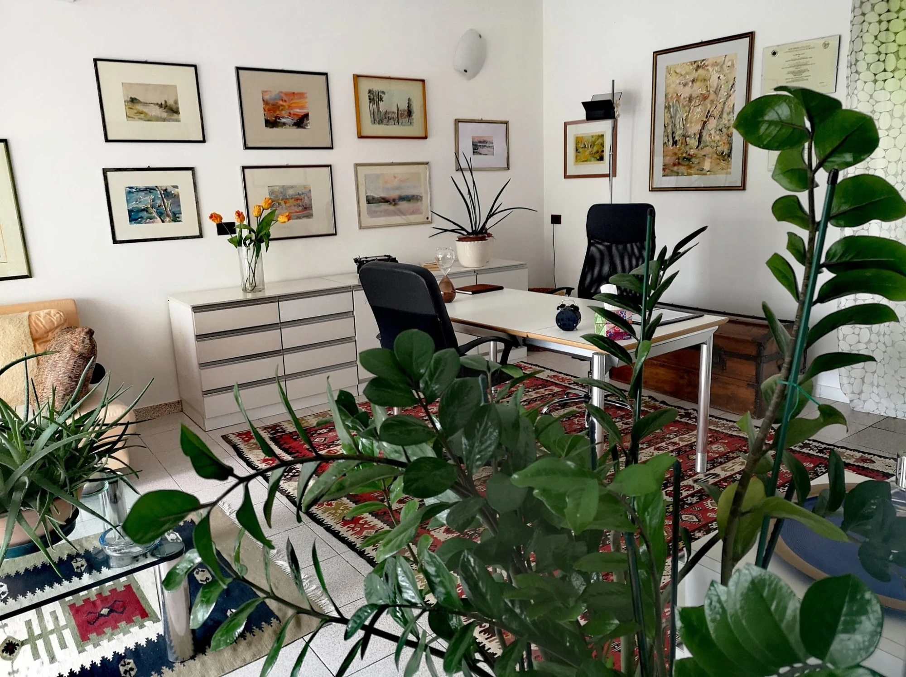

Psicoterapia
Uno spazio di ascolto per adolescenti, adulti e coppie. In studio a Pordenone e Porcia, oppure online.

Piacere, Federico
Sono psicologo e psicoterapeuta, iscritto all'Albo A degli Psicologi del Friuli Venezia Giulia (n. 2086). Lavoro con un orientamento cognitivo-costruttivista: ogni persona ha un modo unico di dare senso a ciò che vive.
Per quattro anni ho lavorato al Centro di Salute Mentale di Pordenone, con colloqui individuali e di gruppo, seguendo adulti e giovani adulti con ansia, depressione, difficoltà relazionali, ritiro sociale e momenti di crisi.
Ho lavorato anche in una comunità per adolescenti, con ragazzi nello spettro autistico, nel servizio di primo ascolto psicologico delle farmacie comunali e nella valutazione neuropsicologica in ospedale. Dal 2023 ricevo come libero professionista.
Formazione ed esperienzaFormazione ed esperienza
Formazione
- 2025
- Master di II livello in PsicodiagnosticaValutazione clinica, forense e medico-legale. Sapienza Università di Roma
- 2024
- Specializzazione in PsicoterapiaIndirizzo cognitivo-costruttivista. CESIPc, Centro Studi in Psicoterapia Cognitiva
- 2024
- Laurea in Scienze dell'educazione e della formazioneUniversità di Ferrara
- 2019
- Iscrizione all'Albo degli PsicologiOrdine degli Psicologi del Friuli Venezia Giulia, n. 2086
- 2018
- Perfezionamento su violenza di generePrevenzione, contrasto e sostegno. Università di Trieste
- 2017
- Laurea magistrale in PsicologiaUniversità di Trieste
- 2011
- Laurea in Scienze psicologicheCognitive e psicobiologiche. Università di Padova
Esperienza clinica
- dal 2023
- Libero professionistaPsicologo e psicoterapeuta a Pordenone e Porcia
- 2024
- Comunità per adolescentiGruppi terapeutici e colloqui con minori con disturbi del comportamento. The Help Onlus, Trieste
- 2020-2023
- Lo psicologo in farmaciaServizio gratuito di primo ascolto psicologico. Farmacie Comunali FVG
- 2019-2022
- Centro di Salute Mentale di PordenoneColloqui psicologici e psicoterapia, individuali e di gruppo
- 2022
- Disturbi dello spettro autisticoValutazione e riabilitazione. Fondazione Bambini e Autismo, Pordenone
- 2022-2023
- Comunità per minori stranieriAccoglienza e inserimento. Fondazione Opera Sacra Famiglia, Pordenone
- 2017-2018
- Reparto di NeurologiaTest neuropsicologici e recupero cognitivo. Ospedale di Pordenone
Di cosa mi occupo
Un primo colloquio serve a capire insieme quale percorso può essere utile. Quando serve, lavoro in collaborazione con psichiatri e altri specialisti.
Ansia e umore
Attacchi di panico, fobie, stress post-traumatico, depressione, burnout, insonnia, lutto.
Coppia e relazioni
Terapia di coppia, dipendenza affettiva, gelosia, sessualità.
Dipendenze
Gioco d'azzardo, alcol, sostanze, fumo.
Psicodiagnostica
Test di personalità, test cognitivi e neuropsicologici, valutazioni forensi.
Adolescenti e terza età
Crisi adolescenziali, bullismo, orientamento, decadimento cognitivo.
Tutte le aree
Percorsi e tariffe
Individuale
Per adolescenti, adulti e terza etàPer affrontare ansia, umore, dipendenze o un momento di cambiamento, con i tuoi tempi.
Coppia
Per ritrovare comunicazione e fiducia, affrontare i conflitti e capire cosa si è inceppato.

Una crisi non è un guasto. È il segnale che serve un nuovo modo di guardare le cose.Prenota un colloquio
Ascolto senza giudizio
Uno spazio accogliente in cui poter dire le cose come sono, dal primo incontro.
Ogni persona è unica
Nessun protocollo uguale per tutti: si parte dal tuo modo di vivere gli eventi.
Obiettivi condivisi
Decidiamo insieme dove vuoi arrivare e verifichiamo i passi lungo la strada.
Il tema più ricorrente, fin dal primo incontro.
Domande che aiutano a vedere le cose diversamente.
Miglioramenti percepiti già dopo poche sedute.
Ambiente confortevole, facile da raggiungere, con parcheggio.
Domande frequenti
Sono i dubbi più comuni di chi sta pensando di chiedere aiuto. Se il tuo non è qui, scrivimi: ti rispondo volentieri.
Come si svolge il primo colloquio?
È un incontro per conoscerci. Mi racconti cosa ti porta qui, con le parole che vuoi, e capiamo insieme se e come posso esserti utile. Non serve prepararsi.
Quanto dura una seduta e ogni quanto ci si vede?
Una seduta dura circa 50 minuti. Di solito ci si vede una volta alla settimana, ma la frequenza si decide insieme in base al percorso e alle tue esigenze.
Quello che dico resta riservato?
Sì. Come psicologo sono tenuto al segreto professionale dal Codice Deontologico: ciò che emerge nei colloqui resta tra noi.
Quanto costa?
Tra 60 e 80 € a seduta, in base al tipo di percorso. Rilascio regolare fattura, detraibile come spesa sanitaria.
Come funzionano i colloqui online?
In videochiamata o al telefono, all'orario concordato. Ti servono solo un posto tranquillo dove parlare liberamente e una connessione stabile.
Posso usare il bonus psicologo?
Aderisco al bonus psicologo per studenti. Scrivimi e verifichiamo insieme se puoi usarlo e come attivarlo.
Serve la prescrizione del medico?
No. Puoi contattarmi direttamente, senza impegnativa.
Che differenza c'è tra psicologo e psicoterapeuta?
Lo psicologo offre sostegno, consulenza e valutazione. Lo psicoterapeuta ha in più una specializzazione di quattro anni che abilita alla cura dei disturbi psicologici. Io sono entrambi.
Pochi passi per iniziare
Scrivimi o chiamami
Un messaggio, una telefonata o una email. Ti rispondo personalmente.
Primo colloquio
Ci conosciamo e capiamo insieme cosa sta succedendo, in studio o online.
Il percorso
Definiamo obiettivi e ritmo degli incontri, e li verifichiamo lungo la strada.
Facciamo il primo passo insieme.
Scrivimi o chiamami per fissare un primo incontro. Ti rispondo personalmente per trovare giorno, orario e modalità.
Scrivimi su WhatsAppTelefono e WhatsApp+39 392 681 4583
| Dal lunedì al sabato | 14:30 - 18:30 |
|---|---|
| Domenica | Chiuso |
Studio di PordenonePiazza Risorgimento 21, 33170 Pordenone
Apri la mappa
Studio di PorciaVia della Fornace 13, 33080 Porcia (PN)
Apri la mappa